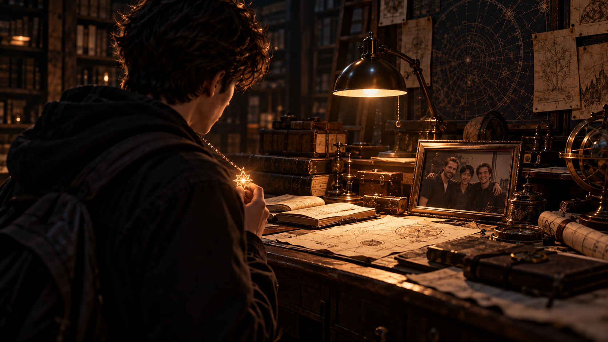

WHITE MAGIC ART STUDIO
第三章
暗房與惡夢
「柴克……」
又來了。
柴克睜開眼睛，發現自己再次置身於那片無邊無際的白霧之中。
這裡沒有天空，也看不見地面。放眼望去，除了濃得化不開的白霧，什麼也沒有。
只有那個聲音，依舊在耳邊迴盪。
「柴克……」
但這一次，他沒有害怕。
取而代之的，是一股壓抑已久的怒氣。
「你到底是誰？」
聲音沒有回答。
柴克咬了咬牙，朝白霧深處走去。
「你已經纏著我整整一個月了！」
霧氣從腳邊緩緩流過。他越走越快，聲音也越來越大。
「每次都把我拉進這個鬼地方，叫我的名字，然後什麼都不說！」
他環顧四周，試圖找出聲音的來源。
「你到底想告訴我什麼？」
「柴克……」
柴克猛然停下腳步。
這一次，聲音是從右邊傳來的。
他立刻轉身。
白霧深處，隱約站著一道人影。
那人披著黑色斗篷，背對著他，一動也不動。
就是那個人！
「嘿！」
柴克快步追了上去。
「我在跟你說話！」
然而，隨著距離逐漸縮短，他卻發現了一件奇怪的事。
那個聲音……似乎有些耳熟。
不只是耳熟。
而是熟悉得讓他心底升起一股寒意。
「柴克……」
柴克的腳步漸漸慢了下來。
「等等……我們是不是認識？」
黑衣人依舊低著頭，沒有回應。
「柴克……」
「你到底是誰？」
柴克伸出手，試圖碰觸對方的肩膀。
就在指尖即將碰到斗篷的瞬間——
黑衣人猛然轉身！
「要不是你……」
柴克僵在原地。
「什麼？」
黑色斗篷下，那人緩緩抬起頭。
看清那張臉的瞬間，柴克幾乎忘了呼吸。
「不……」
他不由自主地後退一步。
「不可能……」
那張臉，他絕對不可能忘記。
「迦勒？」
站在眼前的，竟是那個永遠停留在他童年記憶裡的男孩。
他曾經最好的朋友。
迦勒。
「要不是你……」
迦勒抬起頭，直直望著他。
那雙眼睛裡，早已沒有柴克記憶中的笑意。
只剩下冰冷的怨恨。
「我就不會死。」
柴克的心猛然一沉。
「不是……」
「都是你。」
「不是！」
「如果不是你要去追那個風箏——」
「閉嘴！」
「如果不是你——」
「我叫你閉嘴！」
柴克緊緊摀住耳朵。
「那不是我的錯！」
然而，迦勒的聲音並沒有消失。
反而像是直接鑽進他的腦海。
都是你。
「不是……」
都是你。
「不是！」
柴克猛然抬頭。
迦勒不見了。
取而代之的，是一道龐大得令人窒息的黑影。
那東西沒有眼睛，臉上只有異常巨大的嘴，正緩緩朝他逼近。
柴克愣在原地。
「不……」
怪物向前踏出一步。
接著，又是一步。
柴克終於回過神，轉身拔腿狂奔。
身後傳來沉重的腳步聲。
一下、一下，越來越近。
「走開！」
他拚命往前跑，四周的白霧卻開始迅速染黑。
下一秒，腳下傳來一聲巨響。
地面裂開了。
「等等——！」
柴克還來不及反應，整個世界便在他眼前轟然崩塌。
他失去重心，墜入無底的黑暗。
「啊——！」
柴克猛然從床上坐起。
熟悉的房間映入眼簾。床、書桌、窗戶，一切都還在原本的位置。
陽光透過窗簾的縫隙，在地板上灑下一道柔和的光。
沒有白霧，沒有怪物。
也沒有迦勒。
柴克大口喘著氣，低頭看向自己的雙手。
還在發抖。
「只是夢……」
他用力揉了揉臉，試圖讓自己清醒一點。
「只是夢。」
床邊的電子鬧鐘顯示著上午九點二十分。
星期日。
不用上課，也沒有什麼非得立刻起床的理由。
柴克重新靠回床頭，閉上眼睛，打算再休息一會兒。
然而，那句話卻再次浮現在腦海。
都是你。
他猛然睜開眼睛。
「……夠了。」
柴克一把掀開棉被，翻身下床。
走到書桌前時，他的目光不自覺地落在桌上的相框。
照片裡的男人笑得十分燦爛。
詹姆斯・安德烈。
他的父親。
柴克靜靜望著那張照片。
不知道為什麼，最近每次從那場惡夢中醒來，他總會忍不住想看看父親。
彷彿只要確認照片還在，就能讓某些說不清楚的不安稍微平息。
他伸手拿起相框旁的八角星水晶。
冰涼的觸感貼上掌心。
「你到底留了什麼東西給我啊……」
柴克低聲嘀咕。
水晶當然沒有回答。
他輕輕嘆了口氣，將項鍊重新戴回脖子。
走下樓梯時，柴克發現家裡安靜得有些反常。
「媽？」
沒人回答。
他走進廚房，順手打開冰箱。
「安娜？」
依舊沒有回應。
柴克又探頭看了一眼客廳。
「克里斯？」
很好。
全都不在。
他這才想起，瑞秋今天去了教會，安娜有社團活動。至於克里斯——
據說是去補習。
柴克對這個說法始終抱持高度懷疑。
畢竟，一個能把家裡的網路設定改到連電信公司客服都看不懂的人，到底還需要補什麼？
不過，算了。
至少現在整棟房子都是他的。
想到這裡，柴克的心情終於稍微好了些。
他打開櫥櫃，拿出熱巧克力，又從冰箱裡找到了昨天剩下的蛋糕。
「完美。」
一個沒有課業、沒有兄弟姊妹吵鬧，還有蛋糕可以吃的星期日。
或許今天也沒那麼糟。
柴克正準備端著早餐前往客廳，目光卻突然停在餐桌上。
那裡放著一張名片。
TOM HANKERSON
職業球探。
柴克放下杯子，伸手拿起名片。
比賽結束時的興奮感，如今已經淡去不少。
NBA。
如果是幾個月前的自己，恐怕早就把這張名片裱起來，掛在房間最顯眼的地方。
然而此刻，他只是靜靜地看著。
腦海中，不知怎麼地浮現出克里斯在森林裡問過他的那句話。
「你喜歡籃球嗎？」
當時的他幾乎沒有猶豫就回答了。
現在回想起來，那個答案似乎快得連自己都沒有認真想過。
柴克將名片翻到背面，又翻了回來。
沉默片刻後，他低聲說：
「……之後再說吧。」
他隨手將名片揉成一團，丟進垃圾桶。
紙團撞上桶壁，發出輕微的聲響，隨即落入桶底。
柴克看了它一眼。
接著端起熱巧克力，轉身離開廚房。
窗外仍飄著雪。
柴克靠在窗邊，一手捧著馬克杯，望著後院被白雪覆蓋的景色。
杯中的熱氣在玻璃上凝結出一層薄霧。
他伸出食指，漫不經心地在玻璃上畫了一道線。
接著是第二道。
第三道。
等他回過神時，指尖已經停在半空中。
玻璃上，赫然出現了一個六芒星。
柴克怔住。
「……又是你。」
又是那個符號。
夢裡反覆出現的六芒星。
他放下馬克杯，湊近玻璃，仔細端詳。
六個角，彼此交錯的線條。
為什麼？
自己明明沒有刻意去畫，卻彷彿早就知道這個圖案應該長什麼樣子。
「這到底是什麼……」
柴克皺起眉頭，正準備伸手將圖案擦掉，眼角餘光卻突然捕捉到窗外的異樣。
他停下動作。
後院那棵大樹上，似乎有什麼東西。
不對。
好像是……一個人？
柴克猛然轉頭。
「誰？」
積雪覆蓋的枝葉之間，隱約藏著一道黑色身影。
他立刻推開窗戶。
寒風瞬間灌進房間，吹得他不由自主地縮了縮脖子。
「嘿！誰在那裡？」
沒有回答。
柴克瞇起眼睛，仔細搜尋樹枝之間的每一處陰影。
然而，樹上什麼也沒有。
只有白雪，以及隨風輕輕晃動的枝條。
「……奇怪。」
他又看了一會兒，終於關上窗戶。
「我最近真的該去看醫生了。」
柴克搖了搖頭，端著馬克杯轉身離開。
而在她離開後不久——
大樹的樹幹後方，一道人影緩緩探出頭來。
男人身穿黑色過膝大衣，兜帽遮住了部分面容。
他的目光始終沒有離開那棟房子。
雷・安德烈。
十五年過去，歲月在他的臉上留下了些許痕跡，卻沒有改變那雙冷靜而警覺的眼睛。
只是此刻，那雙眼睛裡還藏著一絲難以掩飾的疲憊。
雷望向柴克剛才站過的窗口。
沉默了許久。
「已經可以察覺到我了啊……」
他的聲音很輕，幾乎消失在冬日的寒風裡。
雷正準備從樹上躍下，耳邊卻突然傳來一道異樣的風聲。
咻——
風向變了。
他的神情瞬間沉了下來。
不對。
這不是自然形成的風。
雷猛然抬頭。
只見柴克家的屋頂上方，竟懸浮著一團扭曲的黑色物體。
那東西沒有固定的形狀，時而像濃煙般散開，時而又像黏稠的液體般蠕動，彷彿有什麼東西正藏在裡頭。
雷抬起手，一顆黑色菱形水晶隨即浮現在掌心上方。
金色雷光在晶體深處閃爍，映亮了他銳利的目光。
「找到你了。」
彷彿察覺到雷的存在，黑色物體猛然轉向。
下一秒，它竟迅速朝遠處逃竄！
「想跑？」
雷毫不猶豫地躍下樹枝，緊追其後。
黑影飛掠過屋頂，沿著街區迅速穿梭，速度快得只留下短暫的殘影。
雷踩上路旁的垃圾箱，借力翻過圍牆，落地後立刻再次加速，
雙方一路追逐，直到黑影鑽進一條狹窄的巷弄。
前方已經沒有退路。
死巷。
黑影停在盡頭，不再逃跑。
雷放慢腳步，朝它一步步逼近。黑色菱形水晶懸浮在肩側，金色電流沿著他的手臂逐漸亮起。
「跑啊。」
他冷冷地望著眼前的黑影。
「怎麼不跑了？」
黑影開始劇烈顫動。
雷皺起眉頭，腳步忽然停住。
不對勁。
那東西不是在害怕。
而是正在失去形體。
「等等……」
啪！
黑影突然崩散，整團落在地上，化成一灘漆黑的液體。
雷的表情驟然一變。
他立刻蹲下身，仔細查看。
沒有生命反應。
也沒有核心。
眼前的東西，根本只是一具空殼。
「該死！」
雷猛然站起身。
他終於明白，對方為什麼會如此輕易地被自己發現，又為什麼一路逃進這條死巷。
「調虎離山……」
雷立刻轉身，朝來時的方向衝去。
「柴克！」
同時，安德烈家
「現在輪到英國隊的漢斯先生！」
電視主播激動的聲音迴盪在客廳裡。
「如果這一箭命中，他將——」
柴克整個人陷在沙發裡，目不轉睛地盯著電視。
熱巧克力已經喝完，蛋糕也只剩下盤子上的幾塊碎屑。
螢幕上正在轉播世界射箭錦標賽。
畫面中的選手緩緩舉起弓，拉開弓弦。
安靜。
專注。
彷彿整個世界只剩下手中的箭，以及遠處的目標。
柴克很喜歡那一瞬間。
選手鬆開手指。
咻——
箭矢飛出的同時，電視畫面卻突然閃爍了一下。
柴克皺起眉頭。
滋——
原本清晰的轉播畫面開始出現雜訊。
「不是吧……」
緊接著，客廳的燈也閃了一次。
又一次。
柴克終於坐直身體。
「媽到底多久沒找人修電路了……」
他嘆了口氣，正準備起身查看，雙眼卻突然傳來一陣刺痛。
「嘶——！」
柴克反射性地閉上眼睛，伸手揉了揉。
幾秒後，刺痛逐漸消退。
然而，當他再次睜開眼睛時，卻整個人愣住了。
空氣裡，竟然出現了一條線。
極細的金色光絲，像一道懸浮在半空中的雷光，正靜靜地向前延伸。
「什麼鬼……」
柴克慢慢站起身。
他順著光絲望去，才發現那道金光竟是從自己的胸前延伸出來的。
他低下頭。
八角星水晶。
那條金色光絲，正是從父親留下的水晶裡散發出來的。
「不可能……」
柴克閉上眼睛，又重新睜開。
光絲還在。
他試著往左移動，金線便跟著移動。
往右也是一樣。
「所以……不是幻覺？」
話才剛出口，他就覺得哪裡不對。
最近發生在自己身上的事情，好像沒有一件能用「不是幻覺」來讓人安心。
柴克再次望向金線。
它一路延伸至廚房，彷彿正在引導他前往某個地方。
他猶豫了片刻。
「好。」
柴克伸手拿起茶几上的遙控器。
「我們今天就把事情搞清楚。」
他跟著金色光絲走進廚房。
光絲一路向前，隨後逐漸下降，最後竟直接穿進了地板。
柴克停下腳步。
「……下面？」
他蹲下身，試著摸索地板，卻沒有發現任何異狀。
直到指尖碰觸到舊地毯的邊緣。
柴克停。他慢慢掀開地毯。
底下的木地板上，赫然出現一道極細的縫隙。
那道縫沿著地板延伸，形成一個方形。
「不會吧……」
柴克仔細摸索，終於在邊緣找到一個隱藏的鐵環。
「不會吧……」
他伸手抓住鐵環，用力往上一拉。
「嘶！」
指尖突然傳來一陣刺痛。
柴克連忙鬆手，這才發現鐵環邊緣有一處生鏽的缺口，剛才似乎不小心劃傷了他的手指。
一道細小的傷口滲出些許鮮血。
「搞什麼……」
柴克皺著眉頭，隨手用衣角擦了擦指尖。
傷口不深，也沒有持續流血。他甩了甩手，便不再理會。
比起這點小傷，他現在更在意眼前的東西。
喀啦——
隨著暗門被掀開，一道通往地下的階梯赫然出現在眼前。
柴克站在洞口，久久沒有說話。
「……我們家有地下室？」
沒有人回答。
「而且從來沒有人告訴我？」
依舊一片安靜。
他低頭看向那道金色光絲。
光絲一路延伸進階梯下方的黑暗，彷彿正在等待他跟上。
柴克深吸了一口氣。
「好。」
他先回到客廳，找來一支木棒，這才重新站到暗門前。
「如果下面是克里斯的秘密遊戲室，我一定要找他算帳。」
柴克握緊木棒，小心翼翼地踏上第一階。
「這是我家。」
第二階。
「我家。」
第三階。
「沒什麼好怕的……」
就在這時，地下深處忽然傳來一道細微的電流聲。
滋——
柴克瞬間停住。
「……我收回剛才那句。」
啪！
下一秒，所有燈光竟同時亮了起來！
柴克嚇得僵在樓梯上。
刺眼的光芒逐漸穩定，他這才看清眼前的景象。
這裡根本不是普通的地下室。
而是一座巨大的書房。
深色木製書櫃沿著牆壁一路延伸，幾乎佔滿了整個空間。書架上擺滿厚重的書籍，中央的書桌則堆放著紙張、照片與各式星圖。
空氣中彌漫著舊紙張與灰塵混合的氣味，彷彿這個地方已經很久沒有人進來過。
柴克緩緩走下最後一階。
「這到底是……」
他環顧四周，最後走向其中一座書櫃。
隨手抽出一本書。
《混種惡魔大全》。
柴克盯著封面。
「好……」
他把書放回去，又拿出另一本。
《靈獸使之詩》。
「更好了。」
第三本。
《古代占星術》。
柴克沉默片刻，將書放回原位。
「我家到底住過什麼人？」
就在這時，金色光絲從他身旁緩緩飄過，朝書桌延伸。
當光絲抵達桌面時，竟逐漸散開，化作細小的金色光點，最後消失在空氣中。

彷彿已經完成了自己的任務。
柴克走向書桌。
桌上散落著幾份泛黃的文件。
他隨手拿起其中一張。
「北方郊區異動……」
再往下看。
「大量失蹤人口事件……」
柴克皺起眉頭。
這些內容不像小說，也不像普通的收藏資料。
倒更像是某種案件紀錄。
他放下文件，翻開另一份資料，卻在看清裡面的東西時愣住了。
那是一張照片。
照片中，三個年輕男人站在陽光下。
其中一個人的臉，柴克再熟悉不過。
「爸？」
詹姆斯・安德烈。
照片裡的父親比他記憶中的模樣年輕許多，臉上卻依舊掛著那抹燦爛的笑容。
柴克連忙拿起照片。
而當他看向旁邊的男人時，眉頭又皺了起來。
「等等……」
這個人，他也見過。
東湖教會。
傑西。
雖然照片中的傑西年輕許多，但柴克確信自己不會認錯。
他的腦海中，忽然閃過昨天兩人握手時，傑西說過的那句話。
你很像你爸爸。
「所以……你真的認識他。」
柴克將照片翻到背面。
沒有任何文字。
他又看向第三個男人。
亞洲面孔。
完全不認識。
柴克將照片放回桌上，目光再次掃過周圍。
星圖、案件紀錄、奇怪的書籍。
父親、傑西。
還有夢裡反覆出現的六芒星。
原本毫無關聯的事情，卻彷彿被一條看不見的線串了起來。
柴克低頭望著父親的照片。
「你到底是什麼人……」
他開始翻找書桌的抽屜。
第一層，堆滿文件。
第二層，是更多照片。
第三層，則放著一疊寫滿奇怪符號的筆記。
直到最底下的抽屜。
一本黑色皮革封面的書，靜靜躺在裡面。
柴克愣了一下。
「聖經？」
他把書拿出來，忍不住苦笑。
「搞半天，只是爸媽的秘密查經室？」
柴克正準備把書放回去，動作卻突然停住。
黑色封面的中央，赫然印著一個燙金圖案。
六芒星。
柴克臉上的笑容逐漸消失。
他慢慢將書放在桌上，小心翼翼地翻開。
創世記。
出埃及記。
詩篇。
乍看之下，內容似乎與普通聖經沒有什麼不同。
「所以呢……？」
柴克繼續翻閱。
就在這時，一張照片忽然從書頁間滑落。
啪。
照片落在桌面上。
柴克低頭一看。
照片拍攝的是一片夜空。
而在夜空中央，竟高掛著一顆異常明亮的金色星體。
他伸手拿起照片。
右下角，印著一行日期。
柴克的目光停住。
他又仔細確認了一遍。
沒有看錯。
「……這是我的生日。」
話音剛落，雙眼竟再次傳來一陣刺痛！
「嘶……」
柴克閉上眼睛，等待不適逐漸消退。
然而，當他再次睜開眼睛時，眼前的書頁竟發生了變化。
原本的字開始重新排列，開始浮現一行行新的文字。
柴克屏住呼吸。
第一行文字逐漸變得清晰。
「繼承主人翼之力的繼承者，將誕生於金色亞斯蘭之星高掛於天空之夜……」
柴克猛然看向手中的照片。
又看回書頁。
「繼承者……？」
他重新確認照片上的日期。
自己的生日。
完全相同。
「……不會吧。」
書頁上的文字仍在持續變化。
更多原本看不見的內容，逐漸浮現在他眼前。
六名被揀選的人。
六種不同的力量。
守護。
惡魔。
最後，一個陌生的名稱映入眼簾。
聖術師。
柴克盯著那三個字，久久沒有移開目光。
荒謬。
這是他腦中浮現的第一個念頭。
然而，緊接著出現的第二個念頭，卻讓他更加不安。
為什麼我看得見？
就在這時，胸前的八角星水晶忽然亮了起來。
「等等……」
嘩啦啦——！
桌上的書頁竟自行翻動！
「喂！」
柴克連忙伸手按住書本，卻完全無法阻止。
書頁越翻越快，直到某個瞬間——
啪！
突然停住。
柴克僵在原地。
眼前這一頁，只有寥寥幾行文字。
而且，字體竟是金色的。
他慢慢讀了下去。
雷霆。
後裔。
守護。
血脈。
鎖鑰。
直系子嗣。
柴克的目光停在最後幾個字上。
「直系子嗣……？」
他皺起眉頭，重新讀了一遍。
「後裔之血……能打開守護鎖鑰……」
後裔。
血。
鎖鑰。
柴克低下頭，看向胸前的八角星水晶。
這是爸爸留給他的。
如果書裡所說的「後裔」，指的就是自己呢？
那麼，所謂的「守護鎖鑰」……
柴克伸手握住水晶，仔細端詳。
「難道是這個？」
他突然想起，剛才打開暗門時，自己的手指似乎被鐵環劃傷了。
柴克攤開手掌。
指尖那道細小的傷口仍在。
他看看傷口，又看看手裡的水晶。
一個荒謬的念頭，逐漸浮現在腦海。
「不會吧……」
柴克忍不住笑了一聲。
「這也太扯了。」
可是，從今天早上開始，自己遇到的事情有哪一件不扯？
夢裡反覆出現的六芒星。
莫名其妙的金色光絲。
藏在家裡的地下書房。
突然自己改內容的文字。
還有那張拍攝於自己生日的金色星體照片。
柴克再次看向書頁。
後裔之血，能打開守護鎖鑰。
他心裡突然冒出一股難以抑制的好奇。
如果這句話是真的呢？
如果爸爸留下的水晶，真的藏著什麼祕密呢？
柴克盯著項鍊，猶豫了幾秒。
最後，他深吸了一口氣。
「好吧……反正都已經走到這一步了。」
他輕輕擠壓受傷的指尖，讓傷口滲出一小滴血。
接著，小心翼翼地將那滴血滴在八角星水晶上。
血滴碰觸水晶的瞬間——
原本微微閃爍的金光，突然靜止。
柴克屏住呼吸。
水晶彷彿正在辨認什麼。
一秒。
兩秒。
「……有反應？」
他忍不住湊近了一點。
下一秒——
轟——！
耀眼的金色雷光猛然爆發，瞬間吞沒了整座地下書房！
黃沙。
天空。
陌生的語言。
擁擠的人群。
古老的城市。
璀璨的星辰。
無數畫面在柴克眼前飛速掠過。
太快了。
他根本來不及看清，更無法理解自己究竟身在何處。
「停下！」
畫面沒有停止。
「我叫你停下！」
古老的建築接連閃過。
緊接著，是六道耀眼的光芒。
雷霆。
樹林。
火焰。
狂風。
海洋。
大地。
所有景象交錯在一起，快得讓柴克幾乎無法承受。
就在他以為這一切永遠不會結束時——
所有聲音，突然消失了。
柴克愣住。
他發現自己站在一片柔和的光芒之中。
四周安靜得不可思議。
而在不遠處，站著一個人。
那人身穿白袍，背對著他。
柴克停下腳步。
不知道為什麼，這個人的存在，與過去那些惡夢帶給他的感受截然不同。
沒有恐懼。
沒有不安。
反而有一種難以形容的熟悉感。
彷彿在經歷了漫長的奔跑之後，終於來到一個可以停下腳步的地方。
柴克的眼眶忽然有些發熱。
他自己也不明白原因。
「你……是誰？」
白袍男人似乎聽見了他的聲音。
他緩緩轉過身。
柴克屏住呼吸。
就在即將看清對方面容的瞬間——
「誰在那裡！」
柴克猛然睜開眼睛！
地下書房。
書桌。
那本聖經。
一切都回來了。
柴克大口喘著氣，愣愣地望著四周。
「什麼……？」
就在這時，他注意到房間角落裡，竟站著一道黑色人影。
柴克瞬間僵住。
「誰？」
對方沒有回答。
柴克連忙抓起先前帶下來的木棒，警戒地望著黑影。
「我問你是誰！」
黑影緩緩向後退去。
柴克握緊木棒，往前踏出一步。
「站住！」
他舉起木棒，正準備揮下——
黑影卻突然失去形體！
啪！
一團漆黑的液體落在地上，迅速攤成一片。
柴克愣在原地。
「……」
他低頭看著那灘液體，久久沒有說話。
「我今天真的受夠這些奇怪的事了。」
然而，就在液體逐漸散開時，一本書竟從中央掉了出來。
柴克皺起眉頭。
他小心翼翼地蹲下身，將書撿起。
封面上只有四個字。
《血祭封印》
柴克的表情逐漸凝固。
「血祭……？」
砰！
樓上突然傳來一聲巨響！
柴克猛然抬頭。
那聲音像是有什麼東西撞倒了家具。
緊接著——
咚。
咚。
咚。
沉重的腳步聲，從樓上緩緩傳來。
柴克握緊木棒。
他望了一眼手中的書，隨即將它放在桌上，悄悄朝樓梯走去。
每走上一階，樓上的聲音就更加清晰。
直到他來到暗門邊緣。
柴克蹲低身體，只露出一雙眼睛，小心翼翼地朝客廳望去。
然後，他看見了。
客廳裡，竟然有一頭怪物。
那東西體型龐大，四肢伏在地面，灰暗的身軀幾乎佔滿了整條走道。
牠沒有眼睛。
臉上只有異常巨大的嘴。
柴克的呼吸瞬間停住。
並不是因為他第一次看見這種東西。
而是因為——
他見過。
就在幾個小時前。
夢裡。
那隻一路追趕他的怪物。
「不可能……」
怪物突然轉動頭部。
柴克立刻摀住嘴巴，整個人縮回暗門後方。
然而，怪物並沒有朝他走來。
牠只是停頓片刻，便繼續往客廳移動。
柴克的心臟跳得飛快。
牠看不見。
這個念頭，讓他稍微冷靜了一點。
柴克慢慢爬出暗門。
一步。
兩步。
怪物沒有反應。
他望向前門。
距離並不遠。
只要動作夠輕，應該可以逃出去。
可是，出去以後呢？
報警？
然後要怎麼說？
「你好，我家裡有一隻從我夢裡跑出來的怪物？」
很好。
警察大概會先把他送去醫院。
柴克屏住呼吸，繼續朝前門移動。
然而，就在他經過櫃子旁時——
喀。
腳不小心碰到了櫃腳。
怪物瞬間停下動作。
柴克也僵住了。
牠緩緩轉過頭，朝聲音傳來的方向望去。
柴克連呼吸都不敢太大聲。
幾秒鐘過去。
怪物終於移開頭部。
柴克這才稍稍鬆了一口氣。
不是靠眼睛……
牠是靠聲音找人。
柴克低頭看向手裡的木棒。
又望向房子的兩個出口。
前門通往街道。
後門則通向森林。
他思索片刻，嘴角忽然浮現一抹緊張的笑容。
有辦法了。
柴克慢慢朝後門移動。
直到手指終於碰上門把。
他深吸了一口氣。
三。
二。
一。
砰！
柴克猛然拉開後門！
同一時間，他使出全力，將手中的木棒朝森林深處丟去！
啪！
木棒撞上遠處的樹幹，發出清脆的聲響。
怪物瞬間轉身！
下一秒，龐大的身軀便朝後門衝了出去！
柴克立刻拔腿往前門狂奔。
他猛然拉開大門。
卻差點迎面撞上一個人。
「喔！」
門外的男人嚇得往後退了一步。
「嗨，柴克！」
柴克瞪大眼睛。
「……鮑勃？」
「你媽在嗎？我剛好經過——」
「走。」
鮑勃愣了一下。
「什麼？」
「快走！」
柴克跨出門外，立刻將大門關上。
鮑勃一臉困惑地看著他。
「發生什麼事了？」
「現在沒時間解釋！」
「可是你臉色很差耶。」
「因為我們家現在有——」
柴克突然停住。
該怎麼解釋？
怪物？
惡魔？
夢魘？
「有什麼？」鮑勃追問。
柴克深吸了一口氣。
「一個非常不應該出現在家裡的東西。」
鮑勃皺起眉頭。
「浣熊？」
柴克看著他。
「比浣熊大。」
「熊？」
「再大一點。」
鮑勃倒抽一口氣。
「你們家進熊了?！」
「重點不是尺寸！」
就在這時，一陣汽車引擎聲從旁邊傳來。
柴克猛然轉頭。
一輛熟悉的車子緩緩停在家門前。
車門打開。
瑞秋走了下來。
她看見站在門口的兩人，露出些許意外的神情。
「鮑勃？」
「你怎麼在這裡？」
「我剛好經過——」
「媽！」
柴克立刻衝了過去。
瑞秋看著神色慌張的兒子。
「怎麼了？」
「我們得走！」
「為什麼？」
「屋子裡有東西！」
瑞秋的表情忽然停頓了一瞬。
只有短短一瞬間。
但柴克看見了。
「什麼東西？」她問。
「我不知道！」
柴克壓低聲音，急促地解釋。
「牠很大，沒有眼睛，而且——」
話還沒說完，瑞秋竟已經朝大門走去。
柴克愣住。
「媽？」
瑞秋沒有回答。
「媽！」
他連忙追上前。
「妳到底有沒有聽到我剛才說什麼？」
「聽到了。」
「那妳還要進去？！」
瑞秋停在門前，伸手握住門把。
柴克望著母親的側臉，忽然察覺到一件事。
她的眼神變了。
那是他從未在母親臉上看過的神情。
不是害怕。
不是困惑。
甚至不是驚訝。
而是某種近乎確認的平靜。
彷彿她一直擔心的事情，終於在今天發生了。
柴克心底突然升起一股不祥的預感。
「媽……」
瑞秋緩緩推開大門。
柴克站在她身後，腦海中忽然閃過今天發生的所有事情。
地下書房。
那些奇怪的書籍。
傑西與父親的合照。
聖術師。
八角星水晶。
還有母親此刻異常平靜的反應。
原本毫無關聯的線索，彷彿在這一瞬間全都串了起來。
柴克怔怔地望著母親的背影。
一個比屋裡那頭怪物更加令人不安的念頭，逐漸浮現在他的腦海。
她知道。
大門完全敞開。
瑞秋走了進去。